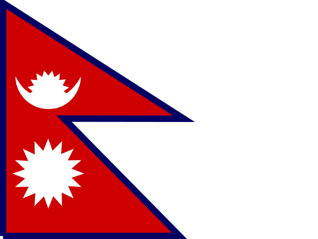

Népal · Nepal : actualité vérifiée et risque
Asie du Sud · 33 événements · 6 à risque élevé · Dernière couverture 28 oct.
En bref
Népal · Nepal apparaît dans 33 événements sur ATHENA, dans 8 de ses dix rubriques. 6 à risque élevé (6/10 ou plus) ; le plus élevé est « Seven killed, 34 wounded in attack at funeral in Jordan's Karak, officials say », à 8.2.
Par rubrique
Géopolitique · 12Énergie et environnement · 5Entreprises · 4Technologie et cyber · 3Société et droit · 3Économie et marchés · 2Commerce et industrie · 2Santé et science · 2
Les événements les plus importants
- Seven killed, 34 wounded in attack at funeral in Jordan's Karak, officials sayRisque 8.2 · 26 oct.
- U.S. to grant visas to Flavio Bolsonaro and his family after Brazil election lossRisque 0.0 · 28 oct.
- Vatican Confirms Pope Leo XIV Has Lung Cancer After SurgeryRisque 1.9 · 22 oct.
- Ballon d'Or: Kane and Putellas take top awardsRisque 2.0 · 28 oct.
- Earthquake of magnitude 7 kills at least 16 in TibetRisque 6.3 · 24 oct.
- Netanyahu bloc leads after half of Israeli votes counted but no majorityRisque 1.4 · 28 oct.
- Two killed, 8 injured in attack on airport in Saudi oil city DammamRisque 6.3 · 23 oct.
- India to evacuate thousands as Cyclone Arnab nears eastern coastRisque 6.5 · 28 oct.
- Russia and Ukraine agree to resume peace talks next monthRisque 7.2 · 22 oct.
- Israeli exit polls indicate deadlock in Tuesday's electionRisque 1.9 · 28 oct.